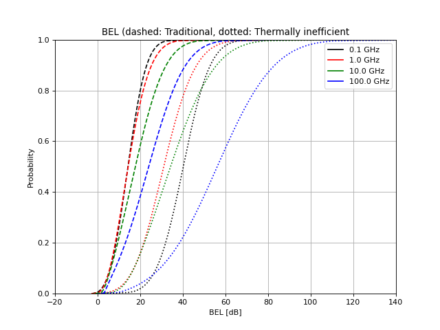

building_entry_loss¶
- pycraf.pathprof.building_entry_loss(freq, theta, prob, building_type)[source] [edit on github]¶
Calculate building entry loss (BEL).
The BEL model is according to Rec. ITU-R P.2109-1.
- Parameters:
- freq
Quantity Frequency of radiation [GHz]
- theta
Quantity Path elevation angle (w.r.t. horizon) [deg] The minimal loss happens at zero horizontal incidence (0 deg)
- prob
Quantity Probability that loss is not exceeded [%]
- building_typeBuildingType enum
Building type allowed values:
BuildingType.TRADITIONALorBuildingType.THERM_EFF
- freq
- Returns:
- L_bel
Quantity Building entry loss [dB]
- L_bel
Notes
The result of this function is to be understood as a cumulative value. For example, if
prob = 2%, it means that for 2% of all possible outcomes, the loss will not exceed the returnedL_belvalue, for the remaining 98% of locations it will therefore be lower thanL_bel. The smallerprob, the smaller the returnedL_bel, i.e., low BELs are more unlikely.
Examples
With the following, one can create the Figures in Rec. ITU-R P.2109-1.
import matplotlib.pyplot as plt from pycraf import conversions as cnv from pycraf import pathprof from astropy import units as u freq = np.logspace(-1, 2, 100) * u.GHz theta = 0 * u.deg prob = 0.5 * cnv.dimless plt.figure(figsize=(8, 6)) for btype in [ pathprof.BuildingType.TRADITIONAL, pathprof.BuildingType.THERM_EFF ]: L_bel = pathprof.building_entry_loss(freq, theta, prob, btype) plt.semilogx(freq, L_bel, '-', label=str(btype)) plt.xlabel('Frequency [GHz]') plt.ylabel('BEL [dB]') plt.xlim((0.1, 100)) plt.ylim((10, 60)) plt.legend(*plt.gca().get_legend_handles_labels()) plt.title('Median BEL at horizontal incidence') plt.grid()

import matplotlib.pyplot as plt from pycraf import conversions as cnv from pycraf import pathprof from astropy import units as u freqs = [0.1, 1, 10, 100] * u.GHz colors = ['k', 'r', 'g', 'b'] theta = 0 * u.deg prob = np.linspace(1e-6, 1 - 1e-6, 200) * cnv.dimless plt.figure(figsize=(8, 6)) for freq, color in zip(freqs, colors): for btype, ls in zip([ pathprof.BuildingType.TRADITIONAL, pathprof.BuildingType.THERM_EFF ], ['--', ':']): L_bel = pathprof.building_entry_loss(freq, theta, prob, btype) plt.plot(L_bel, prob, ls, color=color) # labels plt.plot([], [], '-', color=color, label=str(freq)) plt.xlabel('BEL [dB]') plt.ylabel('Probability') plt.xlim((-20, 140)) plt.ylim((0, 1)) plt.legend(*plt.gca().get_legend_handles_labels()) plt.title('BEL (dashed: Traditional, dotted: Thermally inefficient') plt.grid()

{kind=link}
{kind=link}
{kind=link}
{kind=link}